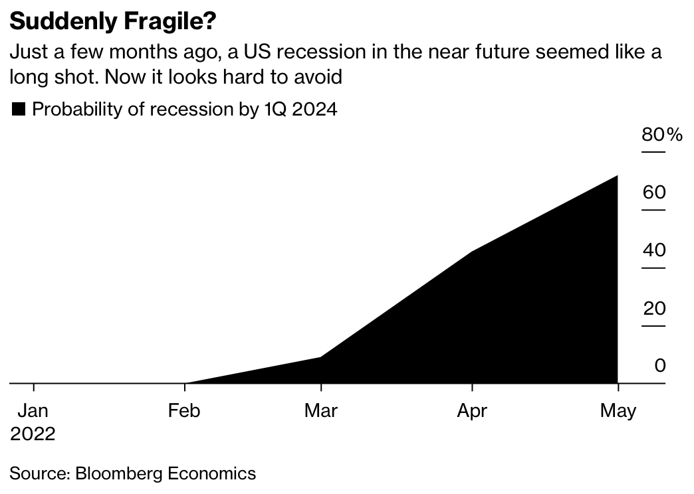

Decision Analysis
Samuel Burer
August 2022
Decision Analysis with Decision Trees
Decision Analysis
Decision trees are a structured tool to help make sequential decisions in the face of uncertainty
Ingredients required for decision analysis using decision trees:
- Possible decisions
- Uncertain events and their probabilities
- Payoffs (or costs) that correspond to decisions and/or events
J&J Flea Market
One day each weekend, you rent an indoor booth to sell your homemade crafts at the J&J Flea Market. From your experience, you know the following:
| Profit/Weather | No Rain | Rain |
|---|---|---|
| Saturday | $1000 | $500 |
| Sunday | $700 | $350 |
- This Saturday, there is a 70% chance of rain
- This Sunday, there is a 30% chance
- Which day do you sell at the flea market?
- Decisions = sell on Sat, sell on Sun
- Events = Sat weather (rain or not), Sun weather (rain or not)
- Payoffs = various dollar amounts
- Probabilities = 30%, 70%, etc
Aside: Probability Distributions
J&J Flea Market (cont’d)
Notes
A decision tree shows all possible decisions and events in a graphical format
Time passes from left to right
The ultimate real-world outcome will correspond to a single path through the tree (from left to right)
Finished tree in Excel. Explanation soon…
Uncertain Events and Probability
Determining Probabilities
Probabilities for an uncertain event can be determined:
- From the advice of expert
- Using past data from similar situations
- Analytically (e.g., flip of a coin)

Source: Bloomberg


Wall Street Journal, “U.S. Rolled Dice in bin Laden Raid,” May 3 2011
Some of the analysts who assessed the intelligence put the chances [of Osama bin Laden being in the compound] as low as 60%

See also this website.
How to Choose a Best Decision
Expected Value
What metric should we use to determine the best decision?
- One of the most common ways to evaluate a decision (like in the J&J example) is to calculate the decision’s … Expected Value
You like to play Pick 3 Lotto. For $1, you choose a number between 0 and 999. If you choose correctly, you win $500. If you choose incorrectly, you win nothing
- EV = 0.001($499) + 0.999(-$1) = -$0.50
You are in sales, and 20% of your customers buy the low-price product (at $100), 55% the medium-price (at $450), and 25% the high-price (at $1100). What is the average revenue from a customer purchase?
- EV = 0.2($100) + 0.55($450) + 0.25($1100) = $542.50
You do odd jobs in your home town, and you can accept one of two jobs this week. The first job pays $500, and the second pays $650.
- EV = max($500, $650) = $650
Two contractors have put in bids for laying the asphalt at your company’s new office building construction site. The first is for $75,000, and the second is for $68,000.
- EV = min($75,000, $68,000) = $68,000
Technical definition of EV:
- For an uncertain event, EV is the weighted average of all possible numerical outcomes, with the probabilities of each of the outcomes used as the weights
- For a decision, EV is the max of all possible numerical outcomes (or min, as appropriate)
Working with Decision Trees
There are two stages to evaluating a decision tree:
Setup: Draw a decision tree that lays out all possible sequences of decisions and events, along with the payoffs/costs and probabilities; also include final payoffs (“terminal values”)
Fold Back: Calculate EV’s from end to beginning to find overall value of the tree
The best sequence of decisions is then found by following the path that maximizes (or minimizes, as appropriate) the overall value
Starting with the terminal values at the ends of the paths…
The value of an event [circle] is the EV of the values of the branches
The value of a decision [square] is the max (or min, as appropriate) of the values of the decisions branches

- TreePlan is an Excel add-in for decision trees
- Student version available at treeplan.com
- YouTube tutorial
- Another YouTube tutorial
- Also see Excel file flea_market.xlsx
More Examples
Example from Past Student

To Build or Not to Build
Your business is located in a region that is somewhat prone to mud slides — each rainy season there is a 1% chance of a mud slide occurring. You estimate that a mud slide would do $1,000,000 damage
You have the option of building a retaining wall that would help reduce the chance of a devastating mud slide. The wall costs $40,000 to build, and if a slide occurs, the wall will hold with a 95% probability
Based on min EV, should you build this wall?
- EV analysis says, “Don’t build wall”
- Still a 1% chance of losing $1,000,000
- Are you comfortable with that risk?
- Comparing strategies…
| Strategy | EV | Risk | Risk Fraction |
|---|---|---|---|
| Don’t build | $10,000 | 0.0100 | 1 out of 100 |
| Build | $40,500 | 0.0005 | 1 out of 2,000 |
This is called a negative outcome analysis
By considering risk of different decisions, you can balance the EV metric against other considerations
Purchasing Call Options
- Tonight you can purchase a 2-day call option for a single share of Stock X.
- The price of the option is $2, which you pay to Sam.
- If purchased, you may exercise the option either tomorrow night, the next night, or neither.
- To exercise the option on a given night means that Sam pays you the difference of Stock X’s share price that night and its price tonight.
- So it only makes sense for you to exercise on a night when the share price is higher than tonight.
- Tonight’s share price for Stock X is $40.
- Each day, you believe the stock price will
- rise 10% with probability 0.25
- stay the same with probability 0.50
- decrease 10% with probability 0.25
At a price of $2, is this option worth it?
- For example, suppose price
- goes up tomorrow ($44.00)
- goes down next day ($39.60)
- If you exercise tomorrow night, then Sam pays you $44 - $40 = $4, so that your net is $4 - $2 = $2
- If you decide to wait until the second night, then you will not exercise the next night because $39.60 is less than tonight’s price of $40
- If you do not exercise at all, then your net is $-2
Aside: Probability Distributions
- Chart shows the probability distribution for the per-day percentage change in stock price
- Similar to a relative histogram
Purchasing Call Options (cont’d)
- Note: In this example, you can eliminate some dumb decisions
- E.g., eliminate the decision of not exercising on the second night when price is above tonight’s price
- See call_option.xlsx